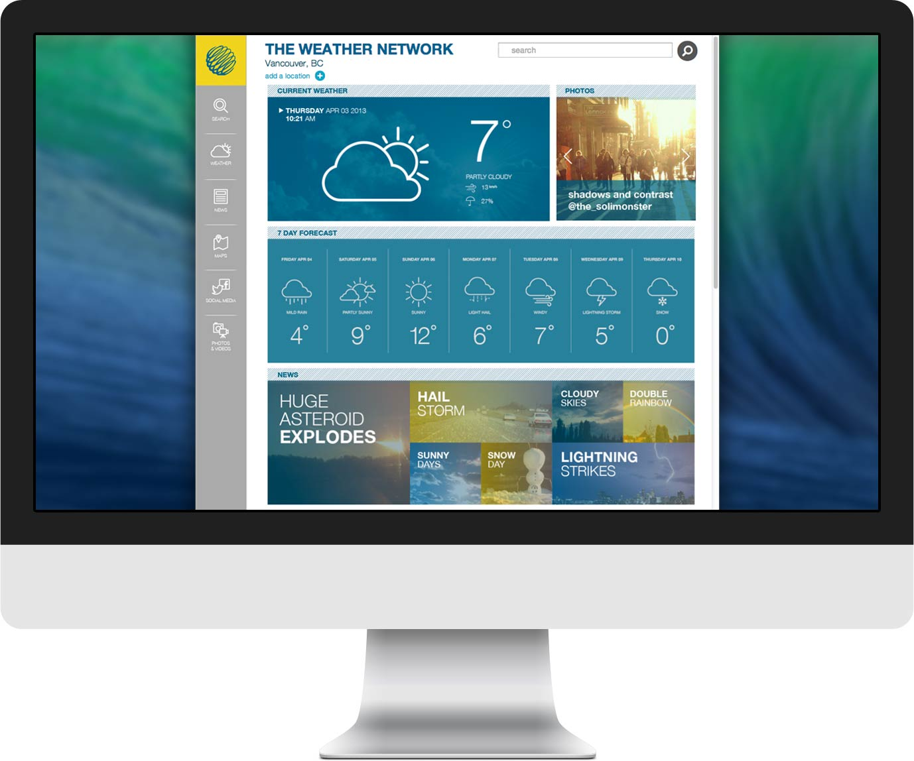
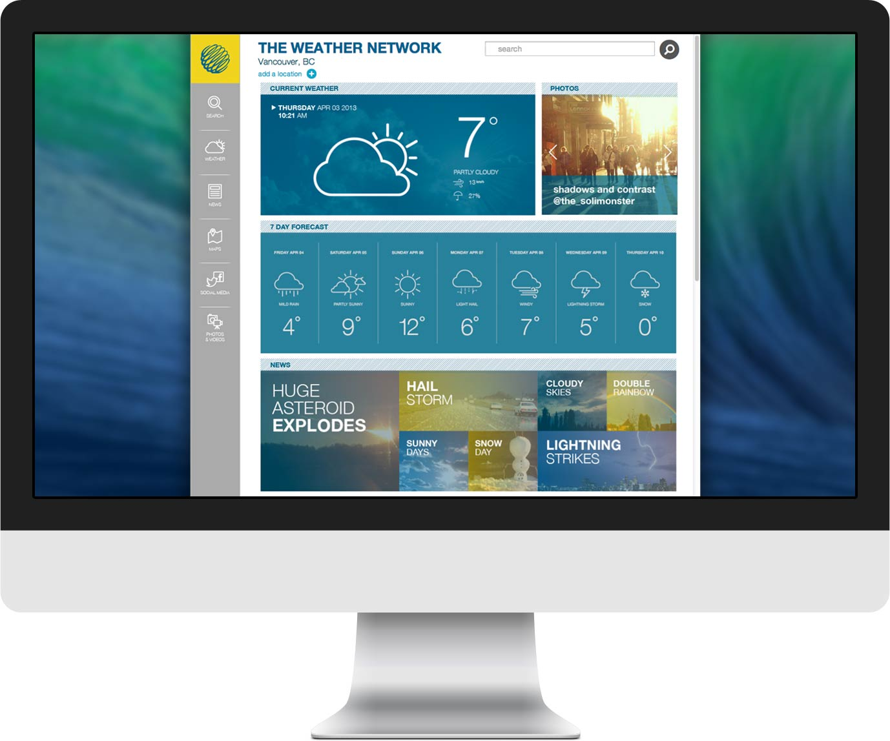

Weather Network
WEBSITE REDESIGN
 

I worked in a team of five to study The Weather Network’s website, and develop prototypes for a redesign based on our findings for a human-computer interaction course.

We first performed a heuristic analysis on the website by observing users interacting with it, and then asking the users to fill out a questionnaire on their experience. We found that the site’s organizational design, navigation experience, and aesthetics could be improved, which is what we aimed to address in our prototypes.
I worked with my team throughout the redesign process, which included creating conceptual designs, early prototypes and wireframes, as well as completing user studies. Our final designs aimed to improve the hierarchical and organizational aspects of the Weather Network website, and make the features the users need more often on the site easier and quicker to access, such as viewing the weather for a certain set of cities.

We came up with two final website designs, and I was responsible for implementing it into a website prototype using HTML, CSS, and Javascript. I decided to use the Foundation front-end framework to help speed up the development process. After final user testing, we found that our prototypes had greatly decreased the time needed for users to complete common tasks, such as adding a city to their frequent locations, or finding a long term forecast for their current city.